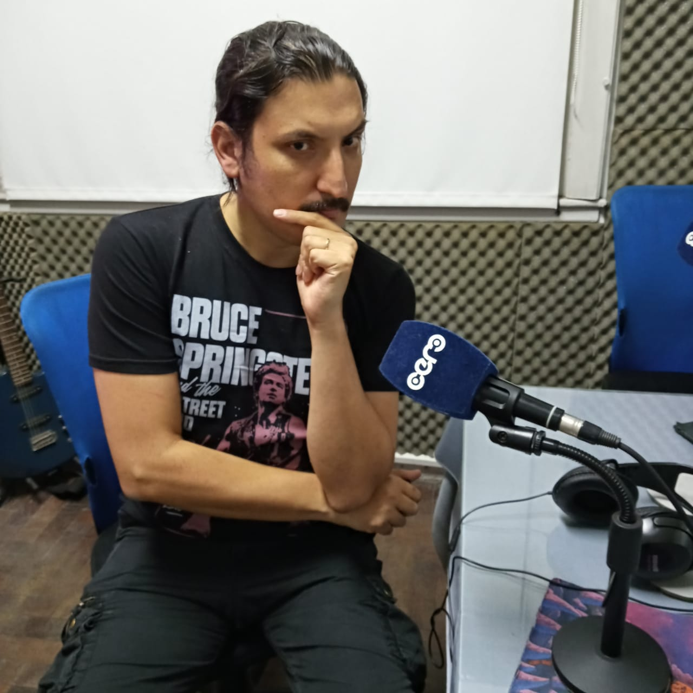

Radio y Podcast
Radio
En radio puntocero.me conduce Cine Continuado desde 2019, con el tagline cine sin urgencias, que cuenta con varias secciones, desde anécdotas a entrevistas a directores, guionistas, sonidistas y otras personas de la industria. Por Ejemplo, Santiago Calori, Flor Efrón, Fernando Salem, Jessica Suárez, Seba DeCaro. Más info

Podcast
Junto con Victoria Duclos desarrollaron la idea de fomentar la mirada de películas argentinas y en 2020 le dieron forma al primer posdast de cine argentino: Sucesos Argentinos, en el que han abordado películas como Los Paranoicos, Los muchachos de antes no usaban arsénico, Gatica, La Flor, entre otros. Más info